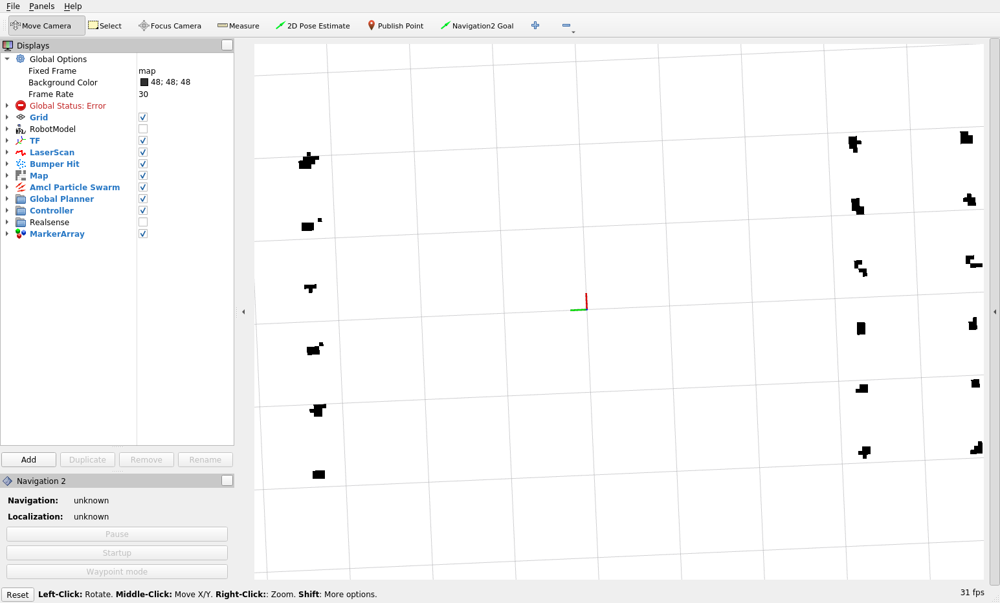
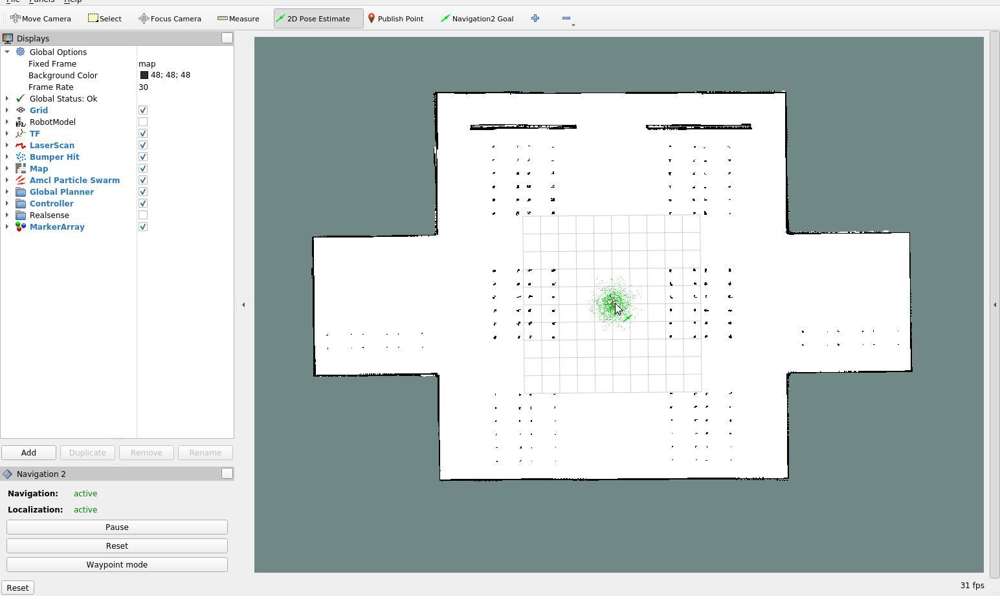
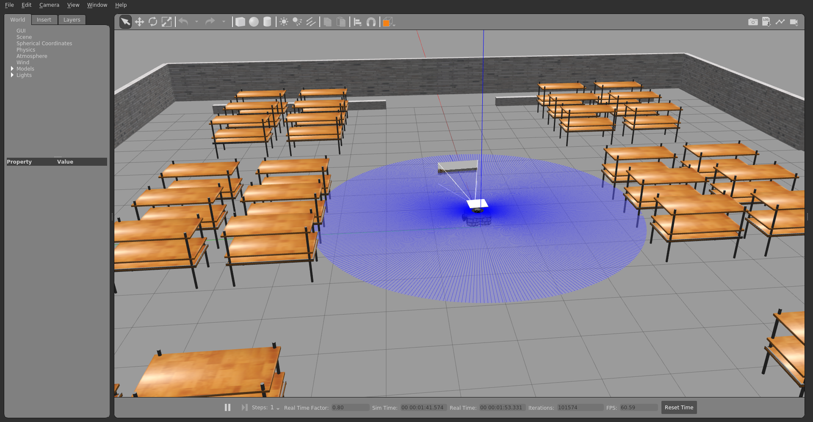

Behaviour Trees
Issues Pending:
#1933 Nav2 local_costmap crash issues
#11 Separate Action server for issuing action commands for robot controller
#9 Multi Robot Discussion
Issues Solved:
#12 Creating a framework to add new new functionality with Nav2
Week 11 Blog
The last week was certainly one of the most happening ones (and in my opinion, the most challenging one) The joy you get when your code works after endless hours of debugging is amazing, but sadly that didn’t last long. Although we have everything ready which we need, the navigation2 integration has some creases which we need to iron out.
Before we go to the development part of our exercise, I want you to get a feel of how it is working. So lets do a quick dry run.
Dry run
Start by cloning the repo. If you are debugging, you can use foxy-devel branch of https://github.com/shreyasgokhale/CustomRobots.git . But if you just want to see how everything is working, clone https://github.com/shreyasgokhale/Amazon-Robot.git and run
xhost +"local:docker@"
docker-compose up --build
This fetches everything using docker and runs amazon_warehouse_world.py launch file. To make it easier, everything is organised from our bringup directory. This file, launches other files and nodes and so on. In the end you will see the familiar RViz and Gazebo Windows. It will take a while to load, have some patience 😅. Finally, once everything is ready, localize our robot in approximate position of the map.

Click on 2D Pose estimate button and estimate our pose on the map. Approximate is fine. This will initialize our nav stack. Then, click on waypoint mode and estimate the pose again. This time, it will initialize our plugin. Then, set your pickup and dropoff points using Navigation Goal button and click on Start Navigation


The robot will start moving. When it reaches our first goal point, it will actuate the lift joint to Load position- making the pallet loaded on the robot. It will go on to the next point and unload the pallet.
Is your robot stuck and never reaches the goal? That is because we don’t have a costmap! Why you ask? There is a bug in the repo which crashes the controller when we have a working local costmap! We are trying to fix it soon.
Okay, what just happened? For that, we need to understand what are behaviour trees and how our code is structured.
Understanding the core structure
Let’s start with design choices that we had for making our use case.
- The quick and easy (but not ideal) one: We can use the
NavigateToPoseaction supplied by Navigation2 to just send goals to the robots. Then we handle everything else (loading pallets, planning) in our central planner by issuing commands to each robot. This is not a bad choice, but we don’t leverage the capabilities of behaviour trees in this case. - The not-so-quick (and easy) one: Creating our custom behaviour tree nodes paired with the plugins and node behaviours. We can leverage
NavigateToPosebehaviour tree node in order to create even a bigger behaviour tree. We can expand this with various conditional and decision nodes in additions to the action plugins, making it even more complex. This way, we can embed our robot behaviour in the tree itself. But this is significantly more convoluted in terms of software.
As our repo will be used as a reference to create more ROS2 navigation Robots and behaviours, we decided to go with the second one. Now summing all of our previous developments (blogs 2x and Finding The Way ), we can define a final end goals for our system:
- A self contained amazon robot package which includes all the gazebo worlds, models, launch files, navigation controllers, plugins and other necessary components to be able to launch a complete amazon warehouse scenario.
- The warehouse scenario can demonstrate loading up of pallets from pick up zones and placing them in the drop off zones. Our custom robot uses it’s lift joint which actuates using gazebo services for loading.
- The behaviours of robot: loading, drop-off, navigating, recovering from situations are all explained using behaviour trees: which we can edit, modify, and change according to our scenario.
nav2_behaviour_tree is the template package which offers a way of including externally created behaviour trees into navigation2. We will be leveraging the NavigateToPose node of behaviour tree to include it in our own behaviour tree and node packages. This node will be called as FollowTargets . If you also want to create you own custom behaviours depending on Navigation2, then following writeup might also help you. So let’s begin,
Creating FollowTargets and corresponding nodes
In order to create our very own node, we need 3 things:
- ROS2 action corresponding to our node
- Behaviour tree which implements this node
- C++ source and header files showcasing its usage.
But what controls the robot? In our case, this will be done by a common task planner. This centralised planner will issue tasks to the robot and will keep a track of things.
Don’t get confused! We have an action server representing our robot’s FollowTarget action. This makes our planner an action client for the robot. But in big order of things, our robot is essentially a service to the centralized planner and it is the centralized planner who calls the shots. Hence, architecturally, the planner acts as a server which issues goals for our robot. For starting out, we will be using rviz plugins for our action client but the task of the reader is to implement one by their own.
This FollowTarget node will accept list of poses and their corresponding load/unload action as an input.( see action message) The string will dictate what action we have to perform (= load or unload). As we evolve our application further, we will include more complex behaviours such as different actions and ability to add stops. For now, we already have a quite a lot to do.
Amazon Robot Controller
Controller is heart of our operations. It is, in essence, an action server which works with our behaviour trees. Also, it is a lifecycle node in ROS2 terms which is managed by nav2_lifecycle_manager. These nodes start as unconfigured and they have different stages of operation. At times, for example on_activate or on_destoy , appropriate functions are called to felicitate the cause. Our robot controller also registers our FollowTarget action server.
For our custom behaviours, we will be implementing our own plugins. Consider the example of one such implemented plugin: LoadPallet . In amazon_robot/amazon_robot_controller/plugins/action/load_pallet.cpp , you will find the code related the plugin. It is called in the way our behaviour tree is arranged in amazon_robot/amazon_robot_controller/behavior_trees/follow_waypoints_and_load.xml
To Be Continued…
Eis to epanideín!